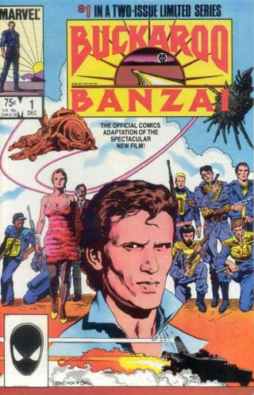

Series: 2 issue movie adaptation
Illustrator: Mark Texeira, Armando Gill
Writer: Bill Mantlo
Publisher: 1984 Marvel

The Adventures of Buckaroo Banzai Across the 8th Dimension!, often shortened to Buckaroo Banzai, is a 1984 American science fiction romantic adventure comedy film directed and produced by W. D. Richter.
The premise centers upon the efforts of the polymath Dr. Buckaroo Banzai, a physicist, neurosurgeon, test pilot, and rock musician, to save the world by defeating a band of inter-dimensional aliens called Red Lectroids from Planet 10. The film is a cross between the action/adventure and sci-fi film genres and also includes elements of comedy, satire, and romance. 20the Century Fox.

Series: 2 issue movie adaptation
Illustrator: Mark Texeira, Armando Gill
Writer: Bill Mantlo
Publisher: 1984 Marvel
The official comics adaptation of the spectacular film starring Peter Weller and John Lithgow.
Buckaroo Banzai. noted physicist, neurosurgeon, psychologist, poet, musician, and his motley band of heroes race against the clock to stop an inter-dimensional invasion of Earth.